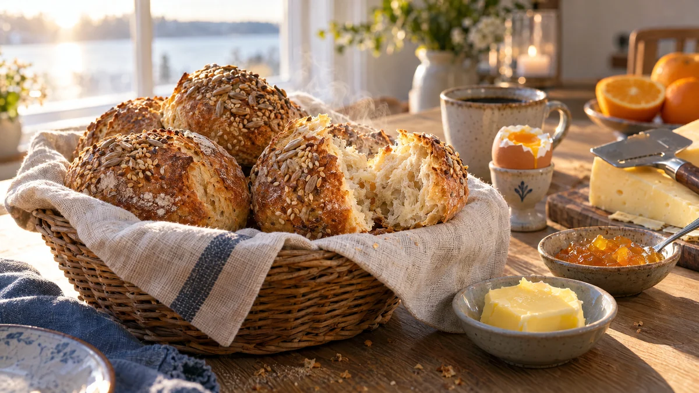

RESTFEST · RECEPTBröd · Fika & bakning · Frukost & brunch
Frukostfrallor med kall jäsning över natten
Degen rörs ihop på tio minuter på kvällen och jäser i kylen medan du sover. På morgonen skärs den direkt i bitar, utan knådning eller formning, och gräddas till rustika, luftiga frallor med krispig skorpa och frön på toppen. Nybakat till helgfrukosten, utan att gå upp tidigt.
- Förberedelse
- 15 min + 8–12 tim i kylen
- Tillagning
- 15 min
- Portioner
- ca 14 frallor
- Nivå
- Nybörjare
 Det här behöver du
Det här behöver du
Tryck på + vid det du behöver köpa.
Deg
Topping
Gör så här
- På kvällen: rör ut jästen i det kalla vattnet i en stor bunke. Använder du torrjäst, blanda den med mjölet i stället.
- Tillsätt salt, sirap, solrosfrön och grahamsmjöl. Tillsätt vetemjölet lite i taget och arbeta degen i 5 minuter med en slev eller i maskin. Den ska vara kladdig och lös, inte fast.
- Täck bunken med lock eller plastfolie och ställ den i kylen över natten, 8–12 timmar.
- På morgonen: sätt ugnen på 250 grader. Klä två plåtar med bakplåtspapper.
- Strö rikligt med mjöl på bakbordet och vänd försiktigt ut degen utan att knåda den, så att luften stannar kvar.
- Strö mjöl och frön över degen och skär den i ca 14 bitar med en degskrapa eller mjölad kniv. Lyft över bitarna till plåtarna med lite mellanrum.
- Grädda en plåt i taget i mitten av ugnen i 12–15 minuter, tills frallorna är gyllenbruna och låter ihåligt när du knackar på undersidan. Låt svalna på galler.
Dekoration och servering
- Lägg frallorna i en brödkorg med en linnehandduk och servera dem ljumma.
- Gott med smör och ost, apelsinmarmeladen i recept 87 eller päronsylten i recept 86.
- Frys frallor som blir över. Värm dem frysta i ugnen på 200 grader i 8–10 minuter, så blir de som nybakade.
- Låt degen stå upp till ett dygn i kylen om det passar bättre, den får bara mer smak.
Mått och ugnstemperaturer
Måtten är svenska (dl, msk, tsk, krm). Ugnstemperaturerna gäller vanlig ugn med över- och undervärme; med varmluft, sänk med 20 grader.